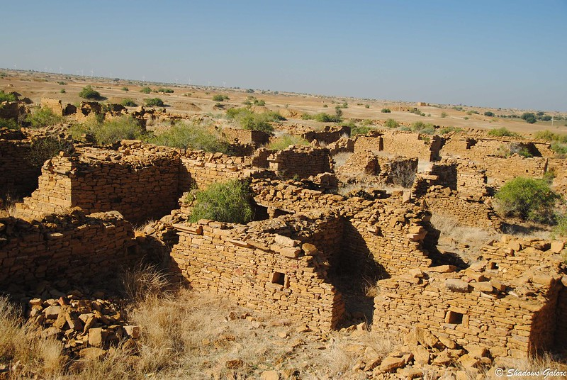
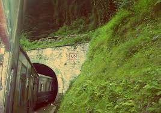

The Bhangarh Fort - Rajasthan
Bhangarh Fort, located in the state of Rajasthan, India, is often considered one of the scariest places in the country
due to its eerie history and the numerous supernatural legends associated with it.
The fort was built in the 17th century by Raja Madho Singh, a prominent ruler of the region.
The tale of Bhangarh's haunting begins with a sorcerer named Singhia, who fell in love with Princess Ratnavati, known for her extraordinary beauty.
Desperate to win her over, Singhia tried to cast a spell on a perfume that the princess would use, but Ratnavati learned of his intentions.
In a clever move, she poured the perfume on a large stone, which then crushed Singhia to death.
Before dying, Singhia cursed the entire town of Bhangarh, predicting its ruin and the death of its inhabitants.
Subsequently, the town faced a series of misfortunes, including famine, drought, and eventually abandonment.
Today, the fort stands in ruins, surrounded by desolate landscapes.
Visitors are prohibited from entering the fort after sunset, as it is believed to be a hub of paranormal activity.
Locals have reported hearing eerie sounds, footsteps, and whispers in the darkness.
Some claim to have seen ghostly apparitions and strange lights,
while others have experienced an overwhelming feeling of dread while inside the fort.
The legends and ghost stories have made Bhangarh Fort a popular destination for thrill-seekers and paranormal enthusiasts.
The Archaeological Survey of India has even placed a notice at the entrance, warning visitors against staying inside the fort after sunset.
While skeptics argue that the spooky reputation of Bhangarh Fort is simply a result of folklore and superstition,
the chilling atmosphere and the historical backdrop of the curse make it an intriguing and eerie place to explore.
Whether one believes in the supernatural or not, the fort's haunting history and its place as one of India's scariest locations
continue to draw curious visitors from around the world.
Have you visited Bhangarh Fort before ?? Yes
Kuldhara Village - Jaisalmer, Rajasthan

Kuldhara is often considered one of the most haunted and eerie places in India
due to the mysterious and tragic history that shrouds this abandoned village in Rajasthan.
The story of Kuldhara begins in the 13th century when it was settled by the Paliwal Brahmins, a thriving and prosperous community.
However, in the early 19th century, during the rule of the Jaisalmer state by Salim Singh,
a minister known for his cruelty and tyranny, the fate of Kuldhara took a dark turn.
Legend has it that Salim Singh became enamored with the daughter of the village chief and demanded that he be allowed to marry her.
When the chief refused, Salim Singh threatened dire consequences for the entire village.
In a desperate attempt to protect their honor and avoid the wrath of the minister,
the villagers of Kuldhara decided to abandon their homes and cursed the village.
They left behind not only their houses but also their belongings, believing that no one should profit from their misfortune.
The curse they invoked was meant to deter anyone from ever inhabiting the village again.
Kuldhara was deserted overnight, and it has remained uninhabited ever since.
The village's eerie ambiance, with its crumbling homes and empty streets, lends itself to the perception of a haunted place.
Locals and visitors have reported strange sightings, unexplained phenomena, and an overall feeling of unease while exploring the village.
Over the years, the story of Kuldhara has gained notoriety, and it has become a popular destination for
paranormal enthusiasts and thrill-seekers. Some claim to have witnessed ghostly apparitions and heard mysterious voices
echoing through the empty streets, adding to the village's reputation as a haunted place.
While the exact truth behind the curse and the subsequent abandonment of Kuldhara remains shrouded in mystery,
the village's eerie atmosphere and its tragic history have made it a place of fascination and fear,
ensuring its status as one of India's most renowned haunted locations. Whether you believe in the paranormal or not, the story of
Kuldhara serves as a haunting reminder of the village's past and the mysteries that still surround it.
Have you visited Kuldhara village before ?? Yes
Shaniwar Wada Fort - Pune , Goa
Shaniwar Wada, located in Pune, Maharashtra, is renowned for its rich history,
but it also carries a dark and eerie reputation as one of the most haunted places in India.
The story behind its haunted status is rooted in a tragic incident that occurred centuries ago.
Shaniwar Wada was built in 1732 by the Peshwa Baji Rao I, a powerful Maratha ruler.
It served as the Peshwa's residence and a symbol of the Maratha Empire's grandeur.
However, it would soon witness a series of disturbing events that would give rise to its haunted reputation.
The tale revolves around a young Peshwa named Narayan Rao, who ascended to the throne at a tender age.
His uncle, Raghunath Rao, desired the Peshwa's power and began plotting against him. One fateful night, a group of conspirators led by
Raghunath Rao stormed Shaniwar Wada. The palace became a battleground as Narayan Rao was brutally murdered.
Legend has it that on the full moon nights, the eerie sound of a young boy's cries for help can still be heard echoing through the palace.
Locals claim that it is the tormented soul of Narayan Rao seeking justice for his gruesome death.
Additionally, the palace's supernatural occurrences include inexplicable sounds of footsteps,
doors creaking open and closing by themselves, and eerie shadows that move without a source.
These occurrences have left many terrified and convinced of the palace's haunting.
Over the years, paranormal investigators and thrill-seekers have explored Shaniwar Wada,
attempting to capture evidence of the supernatural. Numerous stories of encounters with restless spirits
and unexplained phenomena have only fueled its reputation as one of India's most haunted places.
Today, Shaniwar Wada stands as both a historical marvel and a spine-chilling reminder of its tragic past.
Whether you believe in the paranormal or not, the story of Shaniwar Wada serves as a haunting tale that continues to
send shivers down the spines of those who dare to explore its dark corridors and hidden secrets.
Have you visited Shaniwar Wada before ?? Yes
Dumas Beach - Gujarat
Dumas Beach is a popular tourist destination located in Gujarat, India. It is known for its black sand, which is said to be caused by the presence
of volcanic ash. The beach is also known for its eerie atmosphere, which has led to it being labeled as one of the most haunted places in India.
There are a number of reasons why Dumas Beach is considered to be haunted. One of the most popular stories is that the beach is
a burial ground for Hindus and Muslims. According to the story, the spirits of the dead roam the beach at night, wailing and moaning.
Another story is that the beach is haunted by the ghosts of Portuguese soldiers who were killed in a shipwreck in the 17th century.
The soldiers are said to be angry and vengeful, and they attack anyone who comes near the beach at night.
There are also stories of people who have seen strange lights and heard eerie noises on the beach.
Some people have even claimed to have been physically attacked by ghosts.
Despite the stories of hauntings, Dumas Beach remains a popular tourist destination.
Many people are drawn to the beach's eerie atmosphere and the challenge of trying to spot a ghost.
Here are some of the specific incidents and stories that have contributed to Dumas Beach's reputation as a haunted place:
Have you visited Shaniwar Wada before ?? Yes
Jamali Kamali
Jamali Kamali is a historic tomb located within the Mehrauli Archaeological Park in Delhi, India.
It is said to be haunted, and the story behind its haunting is shrouded in mystery and intrigue.
The tomb complex consists of two main structures: one belonging to Sheikh Fazlullah, also known as Jamali,
a Sufi saint and poet who lived during the Mughal period, and the other to Kamali, whose identity remains uncertain.
Some believe that Kamali was a close companion or disciple of Jamali, while others suggest she may have been his wife or an unrelated person.
The haunting of Jamali Kamali is attributed to the eerie and inexplicable occurrences reported by visitors.
Many have claimed to hear whispers, footsteps, and strange sounds emanating from the tomb, particularly during the night.
Some have even reported seeing apparitions and shadows moving within the premises.
Legend has it that the haunting is a result of the unfulfilled love story between Jamali and Kamali.
It is said that they shared a deep bond, and their love was forbidden. When Kamali passed away under mysterious circumstances,
Jamali was heartbroken and withdrew from society. It is believed that their spirits continue to linger in the tomb,
unable to find peace due to the tragic end of their love story.
Others attribute the haunting to the mystical powers and spiritual practices of Jamali, suggesting that his energy and presence continue to influence the area.
The architectural design of the tomb, with its intricate patterns and inscriptions, adds an aura of mysticism to the place.
Despite the various stories and legends surrounding Jamali Kamali, the exact nature of the haunting
remains a subject of debate and fascination. Visitors continue to be drawn to this historic site not only for its
supernatural reputation but also for its exquisite Mughal architecture and the intriguing mysteries that surround it.
Whether one believes in ghosts or not, Jamali Kamali's haunting tale adds an element of mystique to its rich historical and cultural heritage.
Have you visited Jamali Kamali before ?? Yes
Tunnel no. 103 Himachal Pradesh

Tunnel No. 103, also known as the "Bhote Koshi Tunnel," is a railway tunnel located in Himachal Pradesh,
India, that has gained a reputation for being haunted. The haunting of Tunnel No. 103 is shrouded in mystery and local legends.
The story goes that during the construction of the Kalka-Shimla Railway, which was completed in 1903, a tragic incident occurred inside this tunnel.
According to local lore, a British engineer named Colonel Barog was in charge of tunnel construction.
However, due to errors in alignment and geological challenges, the tunnel had to be abandoned and started anew.
This led to humiliation and disciplinary action against Colonel Barog, who was deeply distressed by the failure.
In an unfortunate turn of events, Colonel Barog committed suicide within the tunnel, unable to bear the shame and guilt any longer.
His death is said to have left a lingering presence in the tunnel, leading to reports of paranormal activities.
Locals and railway workers have reported hearing eerie sounds, whispers, and footsteps within the tunnel, especially during the night.
Some claim to have seen the ghostly figure of Colonel Barog himself, dressed in British attire, wandering in and around the tunnel.
The presence of this apparition and the unexplained occurrences have given rise to the belief that Tunnel No. 103 is haunted.
Despite the spooky stories, the Kalka-Shimla Railway remains a popular tourist attraction, and many brave souls venture into Tunnel No. 103.
Whether you believe in ghosts or not, the tragic history and the eerie ambiance of the tunnel continue
to intrigue visitors, making it a memorable stop on the scenic railway route through the Himalayan foothills.
Have you visited Tunnel no. 103 himachal pradesh before ?? Yes
Jatinga - Assam
Jatinga, a picturesque village located in the Dima Hasao district of Assam, India,
has earned a reputation for being associated with mysterious bird suicides rather than being considered haunted.
The phenomenon of birds "committing suicide" at Jatinga has intrigued scientists and locals for decades.
The story behind Jatinga's enigmatic reputation begins during the late monsoon months,
primarily from September to November. During this time, on foggy, moonless nights, a peculiar occurrence unfolds.
Various species of birds, including migratory and local ones, suddenly become disoriented and exhibit erratic flight patterns.
Instead of continuing their journey or roosting peacefully, they descend to the ground in large numbers, often colliding with trees and buildings.
Local legends attribute these mysterious bird deaths to supernatural forces, giving rise to the notion that Jatinga is haunted.
However, scientific research has shed light on the real causes behind this phenomenon.
Researchers believe that a combination of factors, including the village's unique geography,
weather conditions,and artificial lighting, disorients the birds, leading them to their untimely deaths.
Jatinga's high-altitude location and the reflective lights from the nearby village confuse the birds' navigation systems.
The birds, unable to perceive the horizon due to the fog, head towards the lights thinking they are an escape route. This ultimately leads to their collisions and death.
While the mystery of bird suicides has been largely demystified, Jatinga continues to be a place of fascination for bird enthusiasts and researchers alike.
Rather than being haunted, it serves as a reminder of the intricate relationship between nature, geography, and the survival instincts of wildlife.
Have you visited Jatinga - Assam before ?? Yes
Bombay High Court

The Bombay High Court, one of India's oldest and most prestigious legal institutions,
has a rich history and its fair share of ghostly tales. The most famous of these stories revolves
around the ghost of a British lawyer named Barrister Anant Kanhere.
As the legend goes, Barrister Kanhere was a brilliant lawyer in the early 20th century,
known for his sharp intellect and unwavering dedication to his clients.
However, he became embroiled in a high-stakes case that ended in disaster. Kanhere's client was accused of a heinous crime,
and despite his best efforts, he failed to secure an acquittal.
Overcome by guilt and shame, Barrister Kanhere was unable to bear the weight of his client's impending punishment.
Consumed by despair, he committed suicide in his chamber within the Bombay High Court premises.
His tragic end left a lasting mark on the courthouse.
Since that fateful day, many people have reported eerie occurrences within the Bombay High Court.
Nighttime security personnel and cleaning staff have reported hearing footsteps and whispers in the empty hallways.
Some even claim to have seen the ghostly figure of Barrister Kanhere, dressed in traditional British attire, wandering the corridors or sitting in his old chamber.
The haunting of Bombay High Court is said to serve as a reminder of the profound emotional toll thatthe legal profession can take on individuals.
While these ghostly tales continue to circulate, they add an extra layer of mystique and intrigue to this historic institution,
which remains a symbol of justice and legal excellence in India. Whether one believes in the supernatural or not,
the legend of Barrister Kanhere's ghost endures as a captivating part of the Bombay High Court's lore.
Have you visited Bombay High Court before ?? Yes
Dow Hill Kurseong - West Bengal
Dow Hill, a picturesque hill station in Kurseong, West Bengal, is known for more than its natural beauty.
It has gained notoriety for being one of the most haunted places in India.
The story behind its haunting revolves around the Victoria Boys' High School, located amidst dense forests.
Locals and students have reported eerie occurrences for decades. The most famous ghost is
the "headless boy" who is said to roam the woods, carrying his severed head under his arm.
His presence is often accompanied by chilling whispers and footsteps echoing through the trees.
Additionally, the nearby Dow Hill Forest area has had its share of strange happenings.
Many visitors have claimed to hear ghostly laughter and witness shadowy figures among the tall pine trees.
One particularly unsettling factor is that these stories have persisted for years,
with multiple eyewitness accounts lending credibility to the claims. While some attribute the hauntings
to the region's tragic history and the solitude of the forest, others believe it to be paranormal in nature.
Dow Hill continues to be a source of fascination and fear for those who visit,
making it a place where the line between reality and the supernatural blurs.
Have you visited Dow Hill Kurseong - West Bengal before ?? Yes
Agrasen ki Baoli
Agrasen ki Baoli, located in the heart of New Delhi, is an ancient stepwell known for its
architectural beauty and mysterious aura. While it is not officially recognized as a haunted place,
it has garnered a reputation for being eerie due to its unique design and historical background.
The legend goes that Maharaja Agrasen, a revered figure in Indian folklore, ordered the
construction of this stepwell for the well-being of his people. It is believed to
date back to the 14th century and was used not only for storing water but also as a communal gathering place.
The eerie atmosphere arises from its unusually deep and narrow structure, with many layers of steps
leading down to the water. The silence within the stepwell, combined with its hidden location amid the bustling city,
creates an unsettling ambiance.
Over the years, stories and rumors of paranormal activity, including echoes, whispers,
and the sensation of being watched, have emerged. Some visitors have reported feeling a mysterious presence,
which has added to the site's haunted reputation.
However, there is no concrete evidence to support these claims, and the haunting may be
more a product of imagination and folklore than actual paranormal occurrences. Nevertheless,
Agrasen ki Baoli remains a fascinating historical site, attracting both tourists and ghost enthusiasts alike.
Have you visited Agrasen ki Baoli before ?? Yes